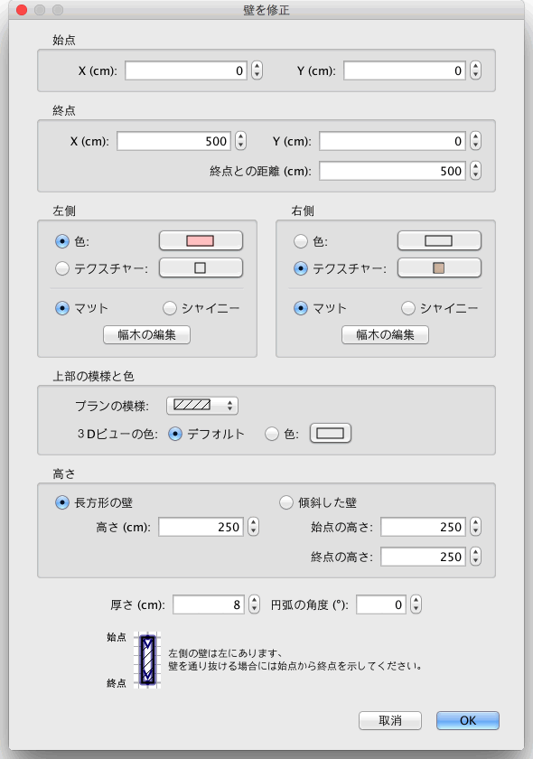

| 壁を編集 | |||
間取りの壁の長さおよび位置の編集は、マウスまたはメニューから プラン > 壁を修復...
のどちらかで修正できます。 1枚 の壁をプラン上で選択している場合、サイズの指標を使い始点および終点を 移動することができ、それは選択した壁の各端に表示します。
|

|
マウスポインタが選択した壁の始点か終点にある時、
ドラッグ&ドロップで示したそのポイントを移動して変更されます。
マウスボタンを押している間、
ツールヒントは壁の長さを表示します。 また、間取りプランの壁をダブルクリック、または プラン > 壁を修正... を選択した後で、 その壁は枠のおかげで編集できるかもしれません。  壁の修正画面で、壁の始点から終点までの左右の側の色またはテクスチャー、
厚さおよび高さの座標を修正 できます。 |
|